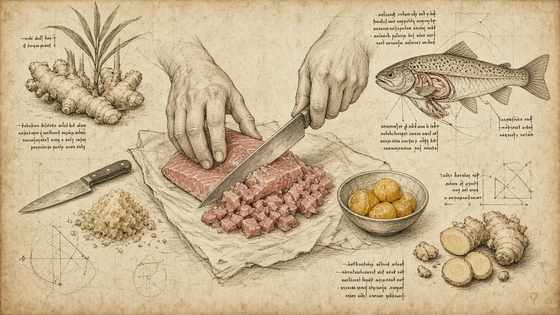
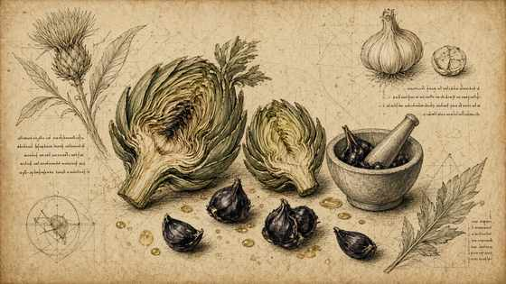
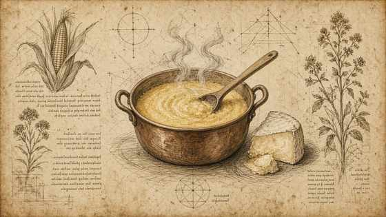
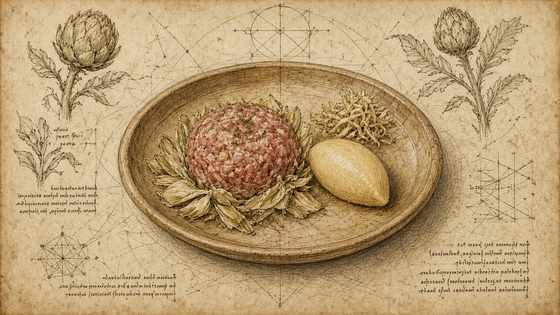

01
Pulire la trota togliendo tutte le lische; preparare la tartare con lo zenzero.
Clean the trout, removing every bone; make the tartare with ginger.

MasterChef Magazine · Ricetta I · Tutorial
MasterChef Magazine · Recipe I · Tutorial
Spesa di Locatelli: trota, zenzero, carciofi, aglio nero, polenta e taleggio — tartare e contorni detti a fine video. — struttura Fooby, tavole Leonardo; quantità solo se dette nel video.
Locatelli’s shopping: trout, ginger, artichokes, black garlic, polenta and Taleggio — tartare and sides named at plating. — Fooby structure, Leonardo plates; quantities only if spoken on camera.
← Scheda del quaderno ← Notebook cardPulire la trota togliendo tutte le lische; preparare la tartare con lo zenzero.
Clean the trout, removing every bone; make the tartare with ginger.

Preparare i carciofi glassati / all’aglio nero (tecnica dettagliata non detta).
Prepare artichokes glazed / with black garlic (detailed technique not stated).

Preparare una polenta fonduta / aromatizzata al taleggio (crema di rosmarino menzionata — metodo non detto).
Prepare a polenta fondue / flavoured with Taleggio (rosemary cream mentioned — method not stated).

Impiattare: carciofi all’aglio nero, tartare di trota allo zenzero, polenta al taleggio.
Plate: black-garlic artichokes, ginger trout tartare, Taleggio polenta.
